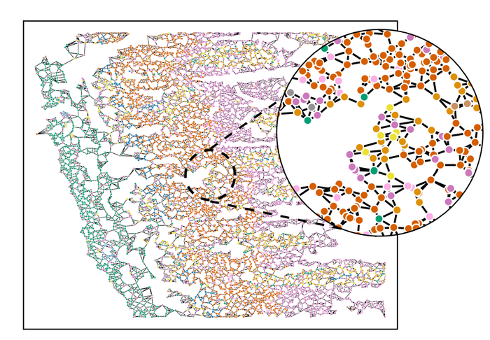
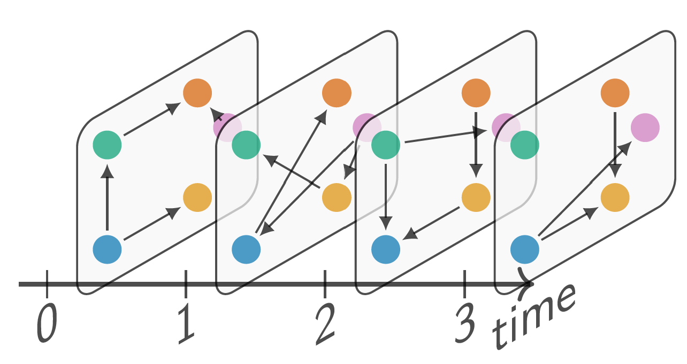
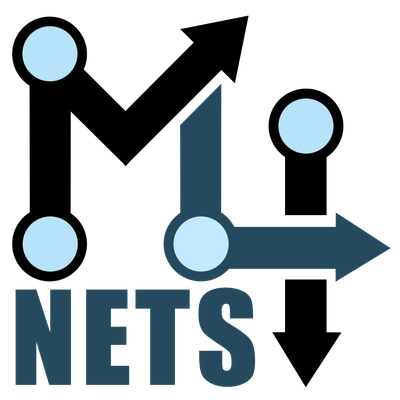

Recent advances in imaging technology have enabled the measurement of individual cells inside a tissue at an unprecedented scale. We use graphs to model this data and develop machine learning methods to investigate the underlying biological processes to eventually aid the development of targeted treatments against diseases such as cancer.

Tasks such as recommending products to customers based on their purchase history or anticipating the behaviour of users on social networking sites using their past interactions are often modelled using temporal graphs. We investigate machine learning models such as temporal graph neural networks that can solve these tasks. We are also actively developing the Python framework PathpyG that facilitates next-generation network analytics and machine learning for temporal graphs.

We explore advanced data science and machine learning techniques for modeling complex systems as graphs or networks. Additionally, we apply network science methods to investigate open questions in biology, empirical software engineering, and computational social science. Our approach is quantitative, data-driven, and interdisciplinary, integrating concepts from network science, machine learning, mathematics, and physics.
CAIDAS conducts research in machine learning, data science, image and text analysis, AI systems, and the ethical, legal, and societal aspects of AI, as well as its economic impact. The research is centered around four key application areas: AI for Life Sciences, Human-Centered AI, AI in Digital Humanities, and AI in Economics and Law. At CAIDAS, we actively transfer knowledge across these different areas, fostering interdisciplinary collaboration and innovation.
The Julius-Maximilians-Universität, founded in 1402, is located in the city of Würzburg in Bavaria, Germany. It offers a wide range of programs across humanities, natural sciences, life sciences, and social sciences, fostering a dynamic academic environment. The university is home to numerous research centers and institutes, driving advancements in fields such as artificial intelligence, medicine, and quantum technology